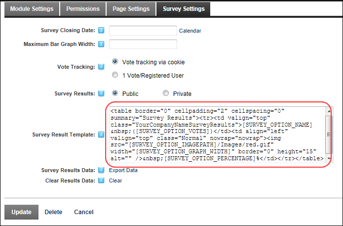

How to modify the template which defines the content, layout and style of survey results in the Survey module.

The list of the replacement tokens for the survey results template of the Survey module.
|
Token |
Description |
|
[SURVEY_OPTION_NAME] |
Displays the name of each option. |
|
[SURVEY_OPTION_VOTES] |
Displays the total number of votes for this option. |
|
SURVEY_OPTION_IMAGEPATH] |
Sets the image path to the survey bar graphic |
|
[SURVEY_OPTION_GRAPH_WIDTH] |
Enables the 'Maximum Bar Graph Width' setting |